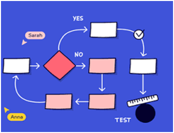

El Concepto de Hipertexto e Hipermedia
Hipertexto/Hipermedia aplicado a sistemas cerrados:
Hipertexto
- El hipertexto es una forma de organizar la información mediante enlaces que permiten al usuario saltar de un fragmento de texto a otro relacionado.
- En un sistema cerrado, el hipertexto se utiliza para estructurar contenidos escritos de manera no lineal, pero dentro de un entorno controlado (ejemplo: un curso interactivo donde los enlaces llevan a secciones específicas del mismo sistema, sin salir a la web).
Hipermedia
- La hipermedia amplía el concepto de hipertexto al incluir otros medios además del texto: imágenes, audios, videos, animaciones.
- En un sistema cerrado, la hipermedia permite que el usuario explore contenidos de forma interactiva y multisensorial, pero siempre dentro de los límites definidos por el diseñador (ejemplo: un kiosco digital en un museo donde se puede ver una obra, escuchar su explicación y ver un video relacionado).
Aplicación en sistemas cerrados
- Cerrado significa que el sistema no depende de enlaces externos (como internet), sino que todo el contenido y las rutas de navegación están predefinidas.
- El hipertexto/hipermedia en este contexto:
- Ofrece navegación no lineal (el usuario decide qué explorar primero).
- Integra múltiples recursos (texto + imagen + audio + video).
- Mantiene la coherencia y control del recorrido, evitando que el usuario se pierda fuera del sistema.
Principios de usabilidad de Donald Norman en sistemas cerrados:
Claridad: La interfaz debe ser comprensible y fácil de usar.
- Tipografía legible, colores contrastantes.
- Visibilidad de la información: El usuario debe poder identificar fácilmente qué opciones están disponibles y qué significan. Los elementos deben estar organizados de manera jerárquica y coherente.
- Lenguaje comprensible: Evitar tecnicismos innecesarios y usar etiquetas claras, simples y consistentes.
- Diseño limpio: sin sobrecarga de información. La interfaz debe evitar la sobrecarga visual. El exceso de elementos genera confusión y disminuye la capacidad de atención.
- Consistencia: Los mismos tipos de información deben presentarse con formatos similares (ejemplo: títulos, íconos, colores).
Ejemplo: cada nodo debe estar claramente identificado con un título breve y un ícono representativo, evitando ambigüedades
Autoexplicación: El sistema debe comunicar su funcionamiento sin necesidad de instrucciones externas..
- Affordances (posibilidades de acción): Los elementos deben “sugerir” cómo se usan. Por ejemplo, un botón debe parecer presionable, un enlace debe diferenciarse visualmente del texto común. Botones con etiquetas claras (Ej: 'Ver obra', 'Escuchar explicación'). Íconos reconocibles y consistentes
- Feedback inmediato: Cada acción del usuario debe generar una respuesta clara del sistema (ejemplo: un cambio de color, un mensaje de confirmación).
- Metáforas familiares: Usar símbolos y convenciones que el usuario ya conoce (ejemplo: ícono de papelera para eliminar).
- Prevención de errores: La interfaz debe guiar al usuario para que no se equivoque, mostrando opciones válidas y bloqueando acciones incorrectas.
Ejemplo: mostrar un botón con un ícono de reproducción y un texto como “Ver video”
Mitigación de la frustración: El diseño debe prevenir errores y facilitar la recuperación de los mismos, reduciendo la frustración del usuario.
- Feedback inmediato (mensajes, sonidos, animaciones).
- Estructura lógica: El recorrido debe ser predecible, sin caminos confusos ni enlaces rotos.
- Minimización de pasos: Cuanto menos clics o acciones se requieran para llegar al objetivo, mejor será la experiencia.
- Recuperación ante errores: Si el usuario se equivoca, debe poder volver atrás fácilmente sin perder el progreso.
- Control del usuario: Aunque la estructura sea inalterable, el usuario debe sentir que puede moverse libremente dentro de los límites establecidos.
- Simplicidad: Evitar sobrecargar al usuario con demasiadas opciones simultáneas
Ejemplo: nodos deben estar conectados de manera que el usuario pueda regresar al inicio o a un menú principal.
Inventario de contenidos
El inventario de contenidos es una lista organizada de los recursos necesarios para desarrollar el sistema. Responde a la pregunta: ¿qué materiales necesito para mi sistema multimedial?
Tipos de recursos:
- Textos: explicaciones, descripciones, narraciones.
- Imágenes: fotografías, ilustraciones, gráficos.
- Audios: narraciones, entrevistas, música.
- Videos: documentales, animaciones, demostraciones.
Criterios de selección:
- Relevancia: que el recurso aporte valor al contenido.
- Calidad: buena resolución, sonido claro, redacción cuidada.
- Derechos de uso: verificar licencias o autoría.
Mapa de navegación
Es la estructura del sistema, cómo se organizan y conectan las pantallas o secciones. Representa la arquitectura de la información y las conexiones entre todas las pantallas del sistema.
Tipos:
- Navegación Lineal: El usuario sigue un camino fijo (ej. un curso interactivo paso a paso).
- Navegación Jerárquica: Estructura de árbol (Inicio > Categorías > Detalles).
- Navegación Mixta: Mezcla varios estilos para dar libertad pero mantener el control..
Ejemplo:
Menú principal → Obras → Seleccionar obra → Ver imagen → Escuchar explicación → Volver al menú.
Primero se hace el inventario de contenidos, porque necesitamos saber qué materiales tenemos. Luego, con ese inventario, diseñamos el mapa de navegación, decidiendo dónde y cómo se ubican esos recursos dentro del sistema.
Es decir: el inventario alimenta al mapa de navegación.

Hipervínculos absolutos y relativos
Los hipervínculos son la base de la navegación web, permitiendo saltar de un recurso a otro mediante la etiqueta `` en HTML.
Hipervínculos Absolutos
Utilizan la URL completa, incluyendo el protocolo (`http` o `https`) y el dominio.
- Uso: Obligatorio para enlazar a sitios web externos.
- Ejemplo: `<a href="https://www.google.com">Ir a Google`
- Ventaja: Funciona desde cualquier ubicación.
- Desventaja: Si cambia el dominio, el enlace se rompe.
Hipervínculos Relativos
Indican la ruta del archivo destino en relación con el archivo actual. No incluyen el dominio.
- Uso: Ideal para la navegación interna de un sitio. Facilita mover el proyecto entre carpetas o servidores sin romper enlaces.
- Ejemplos:
- Mismo directorio: `<a href="contacto.html">Contacto`
- Carpeta interna (bajar nivel): `<a href="imagenes/foto.jpg">Ver foto`
- Carpeta superior (subir nivel): `<a href="../index.html">Volver al inicio`
Flujo de usuario
El flujo de usuario (user flow) es el recorrido secuencial de los pasos que realiza el usuario dentro del sistema para completar una tarea específica. Se expresa generalmente mediante diagramas o esquemas que muestran las acciones, decisiones y pantallas involucradas en la interacción. (Se utilizan diagramas de cajas y flechas para mostrar las pantallas y sus conexiones.)
Ejemplos de recorridos simples:
Menú principal -> Seleccionar módulo -> Ver contenido -> Volver al menú.
Explorar obra -> Ver imagen -> Escuchar explicación -> Volver.
Características principales:
- Secuencialidad: describe el orden lógico de las acciones desde el inicio hasta la finalización de la tarea.
- Claridad: cada paso debe ser comprensible y reflejar la interacción real del usuario con la interfaz.
- Objetivo definido: se centra en una tarea concreta (ejemplo: registro de usuario, búsqueda de información, compra de producto).
- Usabilidad: debe garantizar que el recorrido sea intuitivo, autoexplicativo que reduzca la posibilidad de frustración.
Ejemplo formal: Flujo de usuario para la tarea “Reservar un libro en una biblioteca digital”:
- Inicio → El usuario accede al sistema.
- Catálogo → Selecciona la opción de búsqueda de libros.
- Buscar libro → Ingresa título/autor en un campo de texto y ejecuta la acción mediante un botón.
- Resultados de búsqueda → El sistema muestra una lista de coincidencias.
- Ficha del libro → El usuario selecciona un título y accede a su información detallada.
- Reservar libro → El usuario pulsa el botón de reserva.
- Confirmación → El sistema muestra un mensaje de éxito con los detalles de la reserva.
En resumen, el flujo de usuario es una herramienta formal de diseño que permite visualizar y analizar la interacción entre el usuario y el sistema, asegurando que cada tarea se ejecute de manera clara, eficiente y coherente con los principios de usabilidad.
El mapa de navegación y el flujo de usuario son herramientas complementarias en el diseño de interfaces, pero no son lo mismo. Aquí te presento su relación de manera formal:
Relación entre Mapa y Flujo de usuario
Mapa de navegación
- Definición: Representa la estructura global del sistema, mostrando cómo se organizan las secciones y páginas, y cómo se conectan entre sí.
- Función: Es un esquema jerárquico que permite visualizar la arquitectura de la información.
- Ejemplo: Inicio → Catálogo → Categorías → Ficha de producto → Carrito.
Flujo de usuario
- Definición: Describe la secuencia de pasos que sigue un usuario para completar una tarea específica dentro del sistema.
- Función: Se centra en la experiencia del usuario y en cómo navega a través de la interfaz para lograr un objetivo.
- Ejemplo: Inicio → Buscar libro → Resultados → Seleccionar → Reservar → Confirmación.
El mapa de navegación es la estructura estática del sistema: muestra todas las posibles rutas y conexiones. El flujo de usuario es la ruta dinámica que un usuario recorre dentro de esa estructura para cumplir una tarea.